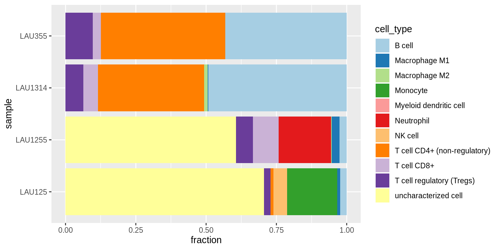
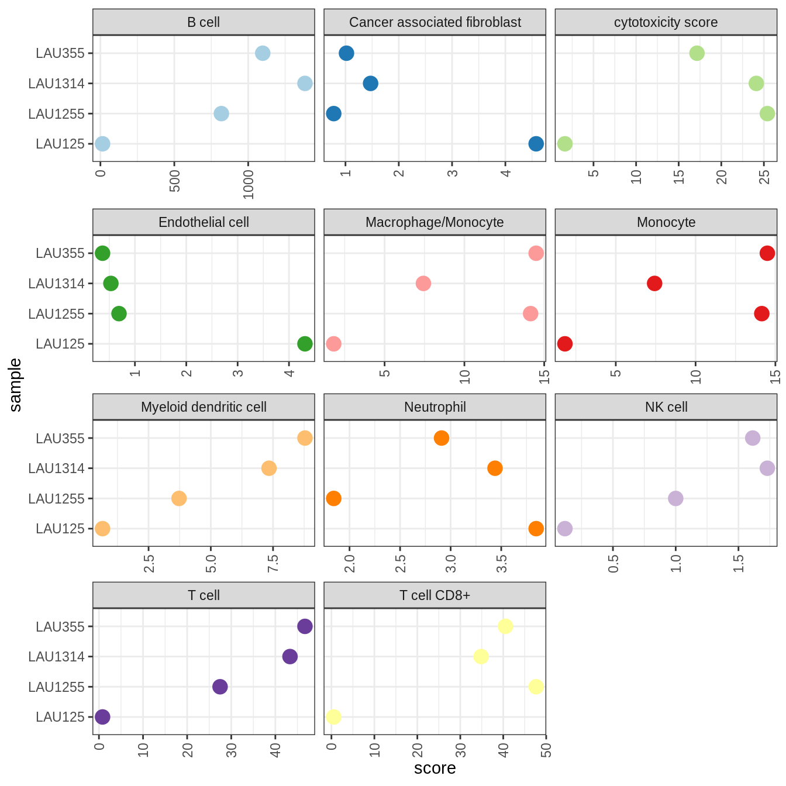
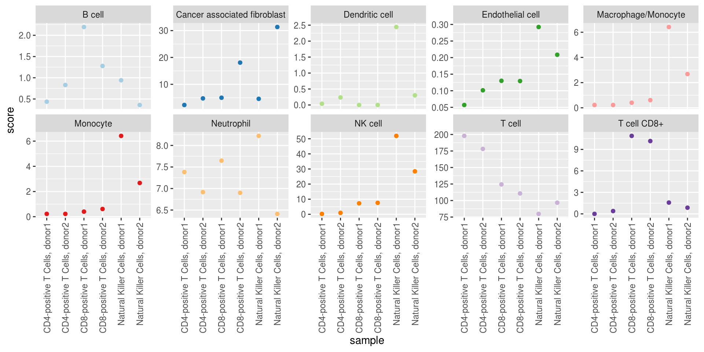

Immunedeconv ships with an example dataset with samples from four patients with metastatic melanoma published in @EPIC2017. It is available from immunedeconv::dataset_racle. It contains a gene expression matrix (dataset_racle$expr_mat) generated using bulk RNA-seq and ‘gold standard’ estimates of immune cell contents profiled with FACS (dataset_racle$ref). We are going to use the bulk RNA-seq data to run the deconvolution methods and will compare the results to the FACS data later on.
The gene expression data is a matrix with HGNC symbols in rows and samples in columns: The dataset is a matrix
| LAU125 | LAU355 | LAU1255 | LAU1314 | |
|---|---|---|---|---|
| A1BG | 0.82 | 0.58 | 0.81 | 0.71 |
| A1CF | 0.00 | 0.01 | 0.00 | 0.00 |
| A2M | 247.15 | 24.88 | 2307.94 | 20.30 |
| A2M-AS1 | 1.38 | 0.20 | 2.60 | 0.28 |
| A2ML1 | 0.03 | 0.00 | 0.05 | 0.02 |
To estimate immune cell fractions, we simply have to invoke the deconvolute function. It requires the specification of one of the following methods for deconvolution:
## MCPcounter EPIC quanTIseq xCell
## "mcp_counter" "epic" "quantiseq" "xcell"
## CIBERSORT CIBERSORT (abs.) TIMER
## "cibersort" "cibersort_abs" "timer"For this example, we use quanTIseq. As a result, we obtain a cell_type x sample data frame with cell-type scores for each sample.
QuanTIseq generates scores that can be interpreted as a cell-type fraction. Let’s visualize the results as a stacked bar chart with tidyverse/ggplot2.
res_quantiseq %>%
gather(sample, fraction, -cell_type) %>%
# plot as stacked bar chart
ggplot(aes(x=sample, y=fraction, fill=cell_type)) +
geom_bar(stat='identity') +
coord_flip() +
scale_fill_brewer(palette="Paired") +
scale_x_discrete(limits = rev(levels(res_quantiseq)))
We observe that
Estimating the amount of “uncharacterized cells” is a novel feature introduced by quanTIseq and EPIC [@EPIC2017, @quantiseq2017]. This estimate often corresponds to the fraction of tumor cells in the sample.
Let’s now apply MCP-counter to the same dataset.
MCP-counter provides scores in arbitrary units that are only comparable between samples, but not between cell-types. The visualisation as bar-chart suggests the scores to be cell-type fractions and is, therefore, unsuitable. Instead, we use ggplot to visualize the scores per-cell type, allowing for a relative comparison between samples.
res_mcp_counter %>%
gather(sample, score, -cell_type) %>%
ggplot(aes(x=sample, y=score, color=cell_type)) +
geom_point(size=4) +
facet_wrap(~cell_type, scales="free_x", ncol=3) +
scale_color_brewer(palette="Paired", guide=FALSE) +
coord_flip() +
theme_bw() +
theme(axis.text.x = element_text(angle = 90, vjust = 0.5, hjust=1))
With the scores being in arbitrary units, the results are not useful for judging if a cell type is present in the sample, or not. However, we can compare the relative values between samples and relate them to the results we obtained earlier using quanTIseq.
Let’s now compare the results with ‘gold standard’ FACS data obtained for the four samples. This is, of course, not a representative benchmark, but it gives a notion about what magnitude of predictive accuracy we can expect.
# construct a single dataframe containing all data
#
# re-map the cell-types to common names.
# only include the cell-types that are measured using FACS
cell_types = c("B cell", "T cell CD4+", "T cell CD8+", "NK cell")
tmp_quantiseq = res_quantiseq %>% map_result_to_celltypes(cell_types, "quantiseq") %>%
rownames_to_column("cell_type") %>%
gather("sample", "estimate", -cell_type) %>%
mutate(method="quanTIseq")
tmp_mcp_counter = res_mcp_counter %>% map_result_to_celltypes(cell_types, "mcp_counter") %>%
rownames_to_column("cell_type") %>%
gather("sample", "estimate", -cell_type) %>%
mutate(method="MCP-counter")
result = bind_rows(tmp_quantiseq, tmp_mcp_counter) %>%
inner_join(dataset_racle$ref)## Joining, by = c("cell_type", "sample")Plot the true vs. estimated values:
result %>%
ggplot(aes(x=true_fraction, y=estimate)) +
geom_point(aes(shape=cell_type, color=cell_type)) +
facet_wrap(cell_type~method, scales="free_y", ncol = 2) +
scale_color_brewer(palette = "Dark2") +
theme_bw()## Warning: Removed 4 rows containing missing values (geom_point).
(MCP counter does not provide estimates for CD4+ T cells.)